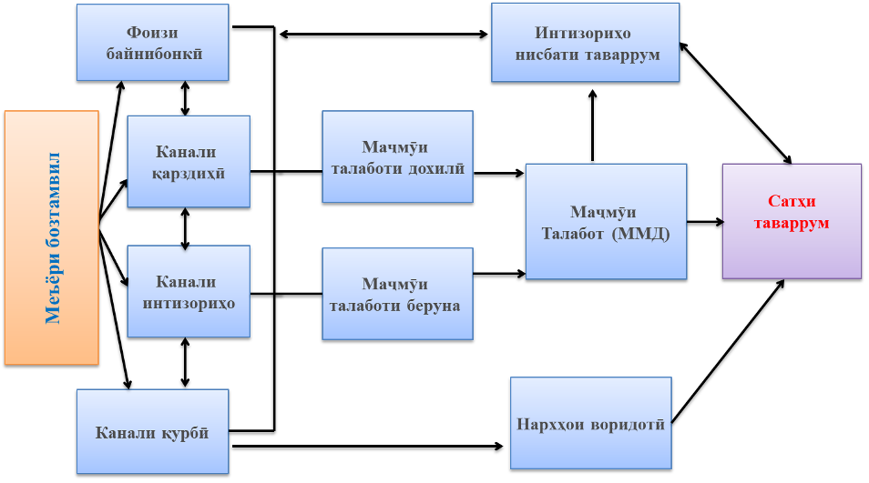

Сиёсати пулию қарзӣ (дар шакли кӯтоҳ)
| Мақсади асосии Бонки миллии Тоҷикистон | Ноил шудан ва нигоҳ доштани сатҳи мӯътадили нархҳои дохилӣ дар давраи дарозмуҳлат |
| Сиёсати пулию қарзӣ | Реҷаи ҳадафгирии таваррум |
| Ҳадафи таваррум | 5 фоиз ±2 банди фоизӣ (барои соли 2026) |
| Чӣ тавр сатҳи таваррумро дар доираи ҳадаф нигоҳ медорем? | Тавассути истифодаи фишангҳо (воситаҳо) ва механизми таъсирбахшии (трансмиссионии) сиёсати пулию қарзӣ, бахусус муқаррар намудани:
|
| Механизми таъсирбахшӣ (трансмиссионӣ) | Тавассути чор усул (канал):
|
| Меъёри бозтамвил | 7,00 фоиз (аз 02 феврали соли 2026) |
| Долони (каридори) меъёри фоизӣ барои пешниҳоди қарзи шабонарӯзӣ ва ҷалби пасандози шабонарӯзӣ |
Ҳудуди боло (меъёри бозтамвил +3 б.ф.): 10,00 фоиз Марказ (меъёри бозтамвил): 7,00 фоиз Ҳудуди поён (меъёри бозтамвил –3 б.ф.): 4,00 фоиз |
| Қарорҳои мавқеи сиёсати пулию қарзӣ (монетарӣ) аз ҷониби ки қабул карда мешавад? | Қарорҳо аз ҷониби Кумитаи сиёсати пулию қарзии Бонки миллии Тоҷикистон қабул карда мешавад, ки ҳадди ақал дар як сол 4 маротиба ҷаласа баргузор менамояд. Кумитаи мазкур ҳар семоҳа ба Раёсати Бонки миллии Тоҷикистон ҳисобот пешниҳод менамояд. |
| Чӣ тавр қарорҳои мавқеи сиёсати пулию қарзӣ (монетарӣ) шарҳ дода мешавад | Маълумоти дахлдор пас аз баргузории ҳар як ҷаласаи Кумитаи сиёсати пулию қарзӣ, инчунин дар ҳисоботҳои (шарҳҳои) моҳона, семоҳа ва дар ҳуҷҷати Самтҳои асосии сиёсати пулию қарзии Ҷумҳурии Тоҷикистон, ки ҳамасола на дертар аз санаи 1 ноябр ба Маҷлиси намояндагони Маҷлиси Олии Ҷумҳурии Тоҷикистон манзур карда мешавад, шарҳ дода мешавад |
| Асоси ҳуқуқӣ | Қонуни Ҷумҳурии Тоҷикистон «Дар бораи Бонки миллии Тоҷикистон» ва дигар санадҳои меъёрии ҳуқуқии дохилӣ» |
Тибқи моддаи 5 Қонун «Дар бораи Бонки миллии Тоҷикистон» мақсади асосии Бонки миллии Тоҷикистон ноил шудан ва нигоҳ доштани сатҳи муътадили нархҳои дохилӣ (сатҳи таваррум) дар давраи дарозмуҳлат мебошад.
Мақсадҳои иловагии Бонки миллии Тоҷикистон, ки бо дарназардошти бартарияти мақсади асосии он амалӣ карда мешаванд, инҳоянд:
Қонуни мазкур инчунин муайян менамояд, ки ба даст овардани фоида мақсади Бонки миллии Тоҷикистон намебошад.
Таваррум ин болоравии сатҳи умумии нархҳо мебошад.
Таварруми муътадил маънои онро дорад, ки нархҳо дар иқтисодиёт муътадил буда, дар доираи ҳадафи муқарраргардида (5 фоиз ±2 б.ф.) қарор дорад.
Вақте ки сатҳи таваррум муътадил бошад:
Муътадилии сатҳи таваррум барои рушди устувори иқтисодии ҳар як кишвар, бахусус Ҷумҳурии Тоҷикистон муҳим арзёбӣ мегардад. Зеро аҳолии кишвар ҳиссаи зиёди даромади худро ба хариди маҳсулоти хӯрокворӣ сарф мекунанд, ки аксарияти онҳоро маҳсулоти воридотӣ ташкил менамоянд. Дар ҳолати якбора боло рафтани нархи маҳсулоти хӯрокворӣ ё воридотӣ, он бевосита ба сатҳи зиндагии ҳаррӯза ва эътимоднокии аҳолӣ таъсири манфӣ хоҳад расонд.
Дар айни замон таҷрибаи бонкҳои марказӣ (миллӣ) ва таҳлилу тадқиқоти олимони ҳамаи кишварҳои ҷаҳон собит намудаанд, ки пешбурди сиёсати пулию қарзӣ танҳо ба сатҳи таваррум дар давраи дарозмуҳлат таъсир расонида, танҳо тавассути муътадил нигоҳ доштани сатҳи таваррум ба дигар нишондиҳандаҳои макроиқтисодӣ таъсири мусбат хоҳад расонд.
Маҳз аз ҳамин лиҳоз бештари бонкҳои марказӣ (миллӣ), ки дорои ҳуқуқи истисноии эмиссияи пули нақд ва масъули таҳия ва амалисозии сиёсати пулию қарзӣ мебошанд, нигоҳдории муътадилии сатҳи нархҳоро (таваррумро) мақсади асосии худ қарор додаанд.
Барои нигоҳ доштани муътадилии сатҳи таваррум, Бонки миллии Тоҷикистон маҷмӯи воситаҳо ва тадбирҳоеро истифода менамоед, ки онро пешбурди сиёсати пулию қарзӣ меноманд.
Сиёсати пулию қарзӣ (сиёсати монетарӣ) – яке аз бахшҳои асосии сиёсати макроиқтисодии давлат ба ҳисоб рафта, баҳри ноил шудан ба мақсади асосӣ (яъне таъмини сатҳи муътадили нархҳо дар давраи дарозмуддат) тавассути истифодаи воситаҳои сиёсати пулию қарзӣ (фишангҳои монетарӣ) татбиқ карда мешавад.
Сиёсати монетарӣ маҷмӯи чораҳо ва тадбирҳои бонки марказӣ (миллӣ) мебошад, ки барои таъсир расонидан ба иқтисодиёти кишвар тавассути идоракунии ҳаҷми пул, меъёрҳои фоизӣ ва дастрасии қарз амалӣ мегардад.
Мақсади мушаххаси сиёсати пулию қарзии Бонки миллии Тоҷикистон нигоҳ доштани сатҳи таваррум дар доираи ҳадафи муқарраршудаи он (5 фоиз ±2 б.ф.) мебошад.
Дар иқтисоди бозорӣ ҳадафгирии таваррум яке аз реҷаҳои муосири пешбурди сиёсати пулию қарзӣ барои нигоҳдории сатҳи муътадили нархҳои дохилӣ (таваррум) дар доираи ҳадафи муқарраргардида ба ҳисоб меравад.
Тибқи адабиётҳои иқтисодӣ ва таҷрибаи бонкҳои марказӣ дар доираи реҷаи ҳадафгирии таваррумии сиёсати монетарӣ бонкҳои марказӣ (миллӣ) ҳадафи рақамии таваррумро барои давраи миёнамуҳлат эълон мекунад (рақами муайян, бо ҳудудҳо ва фосила) ва ӯҳдадор мешавад, ки бо истифода аз фишангҳои мавҷудаи сиёсати монетарӣ, бахусус меъёри фоизи кӯтоҳмуддат ба он ноил гардад.
Яъне ҳадафгирии таваррум реҷаи муосири пешбурди сиёсати пулию қарзӣ (сиёсати монетарӣ) мебошад, ки дар доираи он Бонки миллии Тоҷикистон:
Дар айни замон реҷаи мазкур аз ҷониби бештари кишварҳои минтақа ва ҷаҳон, аз қабили Зеландияи Нав, Австралия, Бразилия, Россия, Қазоқистон, Ӯзбекистон, Украина, Армения, Гурҷистон ва дигар кишварҳо татбиқ карда мешавад.
Тибқи адабиётҳои иқтисодӣ, сатҳи ҷоизи таваррум барои иқтисодиёти кишварҳои рушдёбанда табиӣ ва муҳим мебошад.
Бояд қайд намуд, ки новобаста аз пешравӣ ва дастовардҳои муҳим дар бахшҳои мухталиф, Ҷумҳурии Тоҷикистон ҳамчун ҷузъи ҷудонашавандаи иқтисоди ҷаҳонӣ ҳоло низ ба омилҳо ва хавфҳои берунӣ, бахусус ба тағйирёбии сатҳи нархҳои ҷаҳонии маҳсулоти хӯрокворӣ ва маводи сӯзишворӣ, осебпазир мебошад. Вобаста ба ин, тибқи таҳлил ва мушоҳидаҳо, дар айни замон муқаррар намудани ҳадаф дар доираи 5 фоиз ±2 б.ф. барои иқтисодиёти Ҷумҳурии Тоҷикистон мувофиқи мақсад мебошад. Ноил гардидан ба ҳадафи мазкур имконият фароҳам меорад, ки рушди устувори иқтисодиёти кишвар дар сатҳи зарурӣ таъмин карда шавад.
Ҳадафи мазкур тибқи ҳуҷҷати Самтҳои асосии сиёсати пулию қарзии Ҷумҳурии Тоҷикистон барои соли 2026 ва давраи миёнамуҳлат, ки бо қарори Маҷлиси намояндагони Маҷлиси Олии Ҷумҳурии Тоҷикистон (№214, аз 27 ноябри соли 2025) тасдиқ гардидааст, муқаррар карда шудааст.
Дар ибтидои солҳои гузариш ба реҷаи ҳадафгирии таваррум, яъне соли 2017 ҳадафи таваррум 7 фоиз ±3 б.ф. муқаррар гардида буд ва он зина ба зина то 5 фоиз ±2 б.ф. коҳиш дода шуд. Минбаъд низ вобаста ба рушди устувори иқтисодиёт, афзоиши миёнаравии молиявӣ ва боз ҳам беҳтар гардидани таъсирбахшии фишангҳои сиёсати пулию қарзӣ ҳадафи мазкур тағйир хоҳад ёфт.
Фарқияти (ҳудуди) ±2 б.ф. эътироф менамояд, ки сатҳи таваррум метавонад муваққатан аз 5 фоиз боло ё поён равад. Зеро айни замон ҳоло ҳам вобастагии иқтисодиёти кишвар аз вазъи иқтисодиёти ҷаҳон назаррас мебошад, ки пешгирии пурраи омилҳои манфии берунӣ, бахусус таварруми воридотӣ (аз ҳисоби болоравии нархи молу маҳсулоти воридотӣ) ғайриимкон мебошад.
Пеш аз гузариш ба реҷаи ҳадафгирии таваррум (то соли 2025) Бонки миллии Тоҷикистон реҷаи ҳадафгирии монетарии сиёсати пулию қарзиро (тавассути муайян намудани андозаи ҳаҷми пул дар иқтисодиёт) амалӣ менамуд. Бояд қайд намуд, ки мақсади реҷаҳои мазкур (монетарӣ ва таваррум) як буда (муътадилии сатҳи нархҳо), роҳҳои ноил шудан ба он гуногун мебошад:
| Хусусият | Реҷаи монетарӣ | Реҷаи ҳадафгирии таваррум (аз 2026) |
|---|---|---|
| Мақсад | Муътадилии сатҳи нархҳо | Нигоҳ доштани таваррум дар доираи ҳадаф |
| Фишанги асосӣ | Пулҳои захиравӣ | Меъёри бозтамвил (меъёри фоизӣ) |
| Ҳадафи миёна | Унсурҳои пулӣ | Дурнамои сатҳи таваррум |
| Нақши интизории таваррумии аҳолӣ | Дуюмдараҷа | Асосӣ |
| Пешниҳоди пул | Нақшавӣ (маҳдудият дар пешниҳоди пул) | Вобаста ба талабот |
| Реҷаи қурби асъор | Собит ва ё шинокунандаи танзимшаванда | Шинокунандаи танзимшаванда ва ё озод шинокунанда |
| Коммуникатсия бо аҳолӣ | Муҳим нест | Ҳатмӣ мебошад ва пурра ба мардум шарҳ дода мешавад. |
| Дурнамои нишондиҳандаҳо | Муҳимияти дуюмдараҷа дорад | Ҳатмӣ мебошад |
| Омилҳои назариявии таваррум | Танҳо омили монетарӣ | Омилҳои монетарӣ, талаботӣ ва таклифотӣ |
| Сатҳи таъсирбахшӣ тибқи таҳлилҳои олимони соҳа | Паст | Баланд |
| Таъмини шаффофият | Паст | Баланд |
| Фаҳмиши ҷомеа | Душвор (оиди пул/унсурҳо/таваррум) | Осон (оиди нарх/таваррум) |
Чаро усули пешина дигар самаранок набуд? Ҳадафгирии монетарӣ вобастагии назаррасро байни ҳаҷми пул ва сатҳи таваррум тақозо мекунад. Қаблан дар иқтисодиёти Ҷумҳурии Тоҷикистон ин вобастагӣ нисбатан устувор буда, дар натиҷаи пешрафти иқтисодиёт, рушди низоми молиявӣ, афзоиши ҳаҷми сармоягузориҳо ва воридоти зиёди асъори хориҷӣ бо мурури замон суст ва ғайрисамаранок гардидааст, ки минбаъд назорати ҳаҷми пул дар алоҳидагӣ сатҳи муътадили таваррумро таъмин карда наметавонад.
Бо ин мақсад, Бонки миллии Тоҷикистон аз соли 2012 тасмим гирифт, ки зина ба зина бо назардошти амалӣ намудани ислоҳотҳои зарурӣ ба пешбурди реҷаи ҳадафгирии таваррум гузарад. Бонки миллии Тоҷикистон ҷиҳати гузариш ба реҷаи мазкур атрофи 14 сол омодагӣ намуд (2012-2025).
- такмили фишангҳои сиёсати пулию қарзӣ ва ҷорӣ намудани фишангҳои доимамалкунандаи сиёсати пулию қарзӣ;
- таҳкими иқтидори таҳлилӣ ва дурнамокунии кормандон ва таҳияи моделҳои пешгӯии макроиқтисодӣ ва эконометрикӣ;
- мусоидат ба рушди низоми бонкӣ ва миёнаравии молиявӣ;
- беҳтар намудани раванди иртибот ва коммуникатсия бо аҳолии кишвар;
- беҳтар намудани идораи захираҳои байналмилалӣ;
- гузариш ба реҷаи шинокунандаи танзимшавандаи сиёсати қурби асъор;
- паст намудани сатҳи долларикунонии иқтисодиёт;
- зиёд намудани эътимоднокӣ ба пули миллӣ (сомонӣ) ва ғайра.
- таҳкими механизми трансмиссионии сиёсати пулию қарзӣ;
- ҷорӣ намудани механизми миёнакунии захираҳои ҳатмии ташкилотҳои қарзӣ дар Бонки миллии Тоҷикистон;
- идомаи ҳамкорӣ бо созмонҳои бонуфузи байналмилалӣ дар самти рушди бозори пулӣ ва такмили фишангҳои сиёсати пулию қарзӣ;
- таҳия ва такмили санадҳои меъёрии ҳуқуқӣ;
- тадриҷан коҳиш додани ҳадафи таваррум то 5 фоиз ±2 б.ф.
- ҷалби кумакҳои техникӣ ҷиҳати боз ҳам баланд намудани иқтидори таҳлилию тадқиқоти;
- таҳия ва такмили механизми дурнамои пардохтпазирии ташкилотҳои қарзӣ ва ғайра.
Фишанги (воситаи) асосии сиёсати пулию қарзии Бонки миллии Тоҷикистон дар реҷаи ҳадафгирии таваррум меъёри бозтамвил ба ҳисоб меравад.
Тибқи Қонуни Ҷумҳурии Тоҷикистон “Дар бораи Бонки миллии Тоҷикистон” меъёри бозтамвил меъёри ҳадди ақалли фоизе, ки аз рӯи он Бонки миллии Тоҷикистон ба ташкилотҳои қарзӣ қарз медиҳад ё меъёри даромаде, ки тибқи он Бонки миллии Тоҷикистон ба ташкилотҳои қарзии исломӣ қарз медиҳад.
Ҳамзамон, меъёри бозтамвил ҳамчун фишанги асосии сиёсати пулию қарзӣ барои анҷоми амалиётҳои монетарӣ маҳсуб ёфта, дар асоси таҳлилҳои ҳамаҷонибаи нишондиҳандаҳои мақсаднок, хавфҳои эҳтимолии дохилию берунӣ ва мавқеи сиёсати пулию қарзӣ муқаррар карда мешавад.
Меъёри бозтамвил нақши иттилоотӣ ва ишоратиро (сигналиро) доро буда, самт ва мавқеи сиёсати пулию қарзиро барои давраи оянда (миёнамуҳлат ва ё дарозмуддат) тавсиф менамояд.
Вобаста ба тағйирёбии меъёри бозтамвил аз сатҳи мувозинии худ мавқеи сиёсати пулию қарзӣ барои давраи оянда муайян карда мешавад. Дар адабиётҳои иқтисодӣ ҳолати мувозинии меъёри бозтамвилро меъёри фоизи нейтралӣ меноманд.
Меъёри фоизи нейтралӣ ин фоизи миёнаи меъёри бозтамвили воқеӣ (меъёри бозтамвил тарҳи сатҳи таваррум) дар солҳои гузашта ва ҷамъи (+) дурнамои сатҳи таваррум мебошад.
Баробар будани меъёри бозтамвил ба меъёри нейтралии (мувозинӣ) худ аз мавҷудияти мувозинии сатҳи талаботу таклифот, рушди устувори иқтисодӣ дар доираи иқтидори худ ва муътадилии сатҳи таваррум дар доираи ҳадафи муқарраршудаи он гувоҳӣ медиҳад.
Агар меъёри бозтамвил аз сатҳи нейтралии худ баланд (паст) бошад, он аз қатъӣ (ҳавасмандӣ) будани мавқеи сиёсати пулию қарзӣ дарак медиҳад.
Меъёри бозтамвил дар ҷаласаҳои Кумитаи сиёсати пулию қарзии Бонки миллии Тоҷикистон дар асоси маълумоти таҳлилӣ ва дурнамои макроиқтисодии кишвар, вазъи иқтисодии кишварҳои шарикони асосии савдои ҷумҳурӣ, тамоюли тағйирбии сатҳи нархҳои ҷаҳонии молу маҳсулот, инчунин омилҳо ва интизориҳои таваррумӣ бо овоздиҳии на камтар аз се ду ҳиссаи аъзоёни Кумита муқаррар карда мешавад.
Дар доираи пешбурди реҷаи ҳадафгирии таваррум, вақте ки дурнамои сатҳи таваррум ва интизориҳои таваррумӣ аз ҳадафи муқаррарнамудаи сатҳи таваррум боло бошанд, меъёри бозтамвил баланд ва агар поён бошанд, баръакс паст карда мешавад.
Барои маълумоти бештар оид ба ҳамаи фишангҳои сиёсати пулию қарзӣ, саҳифаи Фишангҳои сиёсати пулию қарзӣ-ро бубинед.
Меъёри бозтамвил дар доираи ҳудуди (коридори) меъёри фоизӣ ба дигар нишондиҳандаҳои пулию қарзӣ таъсир мерасонад.
| Меъёр | Маъно |
|---|---|
| Ҳудуди болоии долон (меъёри қарзи шабонарӯзӣ) | меъёри бозтамвил + 3 б.ф. (10,0 фоиз) —меъёре, ки аз рӯи он Бонки миллии Тоҷикистон ба ташкилотҳои қарзӣ қарзи шабонарӯзӣ медиҳад |
| Марказ (меъёри бозтамвил) | 7,0 фоиз — меъёри калидии сиёсати пулию қарзӣ |
| Ҳудуди поёнии долон (меъёри амонати шабонарӯзӣ) | меъёри бозтамвил – 3 б.ф. (4,0 фоиз) — меъёре, ки Бонки миллии Тоҷикистон ба ташкилотҳои қарзӣ барои ҷалби амонатҳои шабонарӯзӣ пардохт менамояд |
| Меъёри фоизи қарзҳои кӯтоҳмуддати байнибонкӣ | Ҳадафи амалиётии реҷаи ҳадафгирии таваррум буда, бояд дар доираи долони мазкур ва наздик ба меъёри бозтамвил нигоҳ дошта шавад |
Дар реҷаи ҳадафгирии таваррум меъёри фоизи қарзҳои кӯтоҳмуддати байнибонкӣ ҳамчун ҳадафи амалиётии татбиқи сиёсати пулию қарзӣ маҳсуб меёбад. Яъне, Бонки миллии Тоҷикистон бо истифода аз фишангҳои сиёсати пулию қарзӣ, аз ҷумла воситаҳои доимамалкунандаи монетарӣ (фоизи қарзҳои овернайт баробар ба меъёри бозтамвил + 3,0 б.ф. ва ҷалби депозитҳои шабонарӯзӣ - 3,0 б.ф.) ва барориши коғазҳои қиматнок меъёри фоизи қарзҳои кӯтоҳмуддати байнибонкиро наздик ба меъёри бозтамвил нигоҳ медорад.
Бонки миллии Тоҷикистон барои иҷрои вазифа ва мақсади худ дар соҳаи сиёсати пулию қарзӣ фишангҳои (воситаҳои) зеринро истифода мебарад:
Барои маълумоти бештар, саҳифаи Фишангҳои сиёсати пулию қарзӣ-ро назар афканед.
Дар Бонки миллии Тоҷикистон қабули қарорҳо оид ба муайян намудани мавқеи сиёсати пулию қарзӣ ва истифодаи фишангҳои сиёсати пулию қарзӣ ба зиммаи Кумитаи сиёсати пулию қарзии Бонки миллии Тоҷикистон гузошта шудааст.
Кумитаи сиёсати пулию қарзӣ мақоми мустақили доимамалкунандаи машваратӣ буда, мутобиқи Қонуни Ҷумҳурии Тоҷикистон “Дар бораи Бонки миллии Тоҷикистон”, Cамтҳои асосии сиёсати пулию қарзии Ҷумҳурии Тоҷикистон, дигар санадҳои меъёрии ҳуқуқии Бонки миллии Тоҷикистон ва Низомномаи худ фаъолият менамояд.
Низомнома, аз ҷумла ҳайат, вазифаҳо ва тартиби кори Кумита аз ҷониби Раёсати Бонки миллии Тоҷикистон тасдиқ мегардад. Раиси Бонки миллии Тоҷикистон ҳамчун Раиси Кумитаи сиёсати пулию қарзӣ ба ҳисоб меравад.
Барои маълумоти бештар саҳифаи Кумитаи сиёсати пулию қарзии БМТ-ро бубинед.
Дар ҳолати аз ҷониби Бонки миллии Тоҷикистон тағйир додани меъёри бозтамвил таъсири он ба сатҳи нархҳо як давраи муайянро дар бар мегирад. Тағйир додани меъёри бозтамвил таъсири худро зина ба зина ба нишондиҳандаҳои молиявию иқтисодӣ бахусус ба сатҳи таваррум мерасонад, ки онро дар адабиётҳои иқтисодӣ механизми трансмиссионӣ ё худ механизми таъсирбахшӣ меноманд.
Механизми трансмиссионии сиёсати пулию қарзӣ тавассути усулҳои (каналҳои) зерин амалӣ карда мешавад:

Барои маълумот: Дар Ҷумҳурии Тоҷикистон мисли таҷрибаи дигар кишварҳои минтақа таъсири пурраи тағйири меъёри фоизӣ ба сатҳи нархҳо одатан якчанд семоҳаи ояндаро дар бар мегирад. Бинобар ин, Бонки миллии Тоҷикистон қарорҳои сиёсати пулию қарзиро бо назардошти дурнамои сатҳи таваррум барои давраи ояндаи миёнамуҳлат қабул менамояд.
Дар Бонки миллии Тоҷикистон дурнамои сатҳи таваррум тавассути моделҳои гуногуни эконометрикӣ ва сохтории макроиқтисодӣ (минбаъд – модел), ки дар ҳамкорӣ бо созмонҳои молиявии бонуфузи байналмилалӣ таҳия гардидаанд, муайян карда мешавад.
Модел ин маҷмӯи муносибатҳои соддакардашуда мебошад, ки бо истифода аз барномаҳои муосири эконометрикӣ барои таҳлили равандҳои иқтисодӣ, арзёбии таъсири омилҳо ва таҳияи дурнамо истифода мегардад.
Дар дурнамои сатҳи таваррум ҳамаи омилҳои эҳтимолии дохилию берунии кишвар, аз ҷумла вазъи макроиқтисодии кишвар, интизориҳои таваррумӣ, таҳлили ҳамаи нишондиҳандаҳои монетарӣ ва макроиқтисодии кишвар, вазъи иқтисодии кишварҳои шарикони асосии савдои ҷумҳурӣ, тамоюли тағйирбии сатҳи нархҳои ҷаҳонии молу маҳсулот, динамикаи тағйирёбии нишондиҳандаҳои омории монетарӣ ва макроиқтисодӣ, инчунин дигар хавфҳои эҳтимолӣ ба инобат гирифта мешаванд.
Яъне мавқеъи минбаъдаи сиёсати пулию қарзӣ дар асоси дурнамои сатҳи таваррум муайян карда мешавад.
Сиёсати пулию қарзӣ ба зиндагии ҳаррӯзаи аҳолӣ метавонад чунин таъсир расонад:
На ҳамаи омилҳои таваррумӣ аз сиёсати пулию қарзӣ сарчашма мегиранд. Аз ҷумла омилҳое мавҷуд мебошанд, ки Бонки миллии Тоҷикистон ҷиҳати пешгирии онҳо дар якҷоягӣ бо вазорату идораҳои дахлдори ҷумҳурӣ чораҳои зарурӣ меандешад, ба монанди:
1) Тағйирёбии нархҳои ҷаҳонӣ;
2) Тағйирёбии экологӣ;
3) Вазъи геосиёсӣ;
4) Фазои сармоягузорӣ;
5) Вобастагӣ аз воридот;
6) Омилҳои маъмурӣ;
7) Омилҳои мавсимӣ;
8) Тағйирёбии сиёсати фискалӣ (буҷету андоз);
9) Омилҳо ва муаммоҳои сохторӣ;
10) Вазъи молиявию иқтисодии ҷаҳон.
Маълумот аз маводи расмии Бонки миллии Тоҷикистон (2026) омода шудааст.
Барои маълумоти актуалӣ: nbt.tj